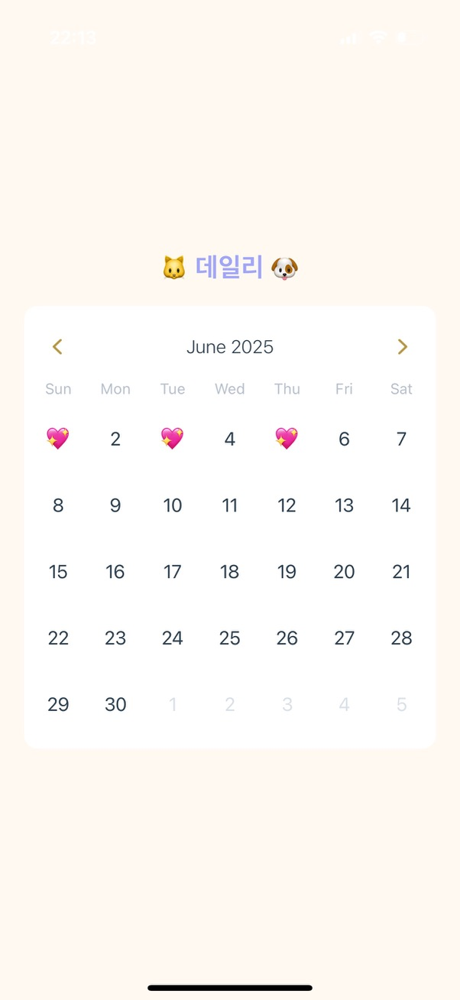
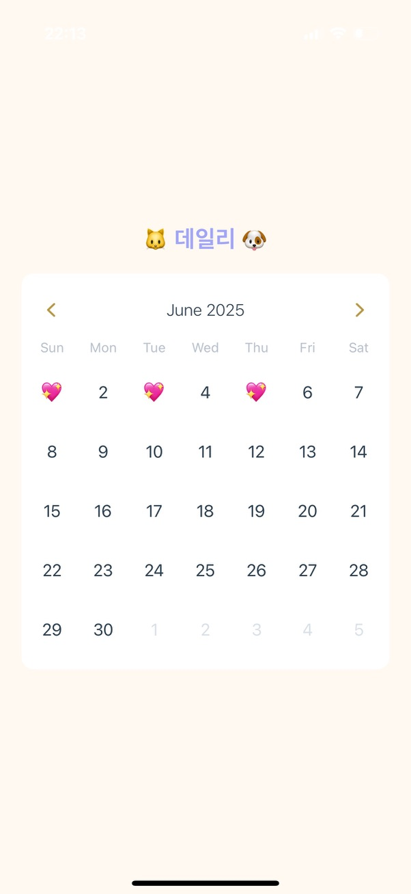
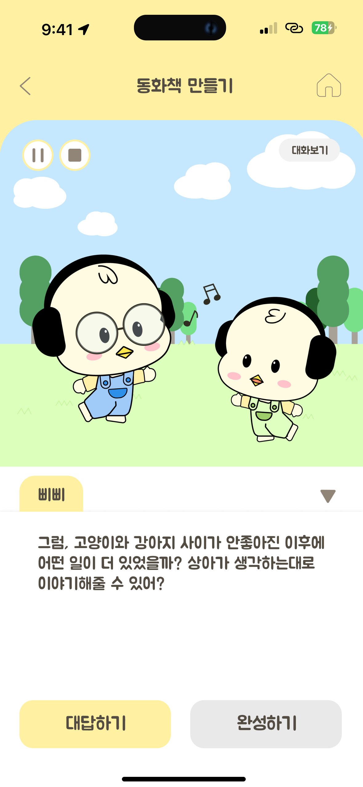
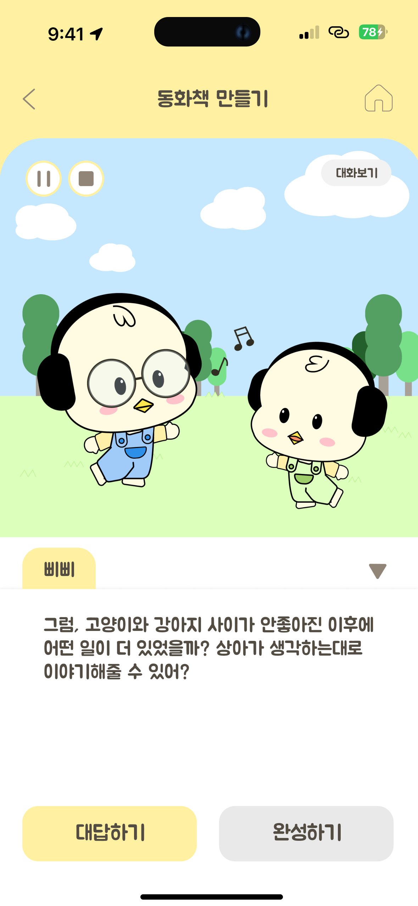
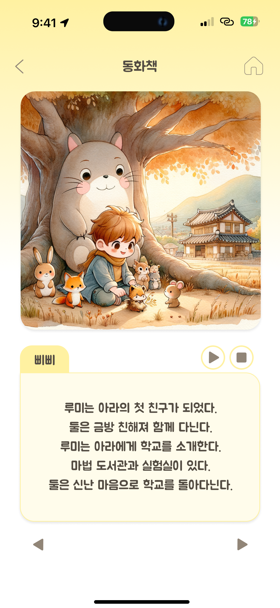
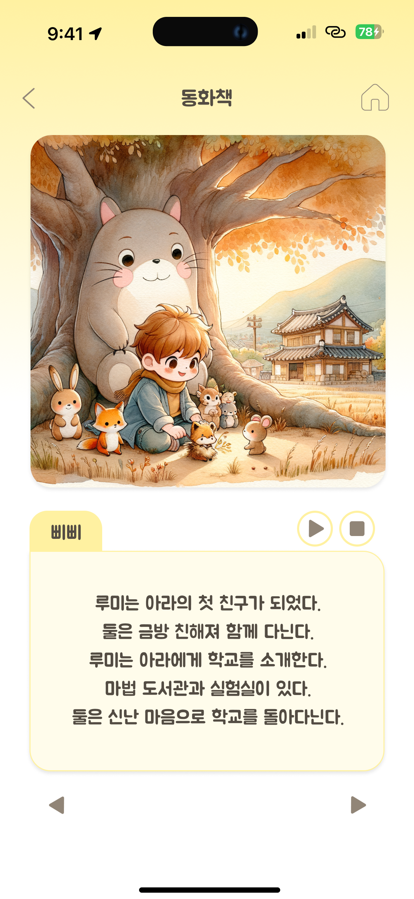

SangA Kim
Cloud / Infra


Introduction
복잡한 인프라 속 문제를 집요하게 추적하고,
더 나은 구조로 재설계하는 사람입니다.
기술은 어렵지만, 결국 사람이 의도를 담아 설계하고, 방향을 결정하는 것이라고 믿습니다.
저는 단순히 동작 여부를 넘어서 왜 이렇게 설계됐는지, 무엇을 바꾸면 더 효율적인지를 끊임없이 고민하며 시스템을 바라봅니다.
실제로 Aira 프로젝트에서는 서버리스 전환, VPC 구조 개선, 오토스케일링 정책 수립을 통해
서비스 응답 시간을 70% 개선하고 예산 내에서 인프라를 안정 운영한 경험이 있습니다.
기술적 문제를 넘어서 운영 구조와 비용까지 고려한 판단을 내릴 수 있도록 설계했습니다.
문제를 회피하지 않고 원인을 다층적으로 분석하며
기술과 구조, 비용과 효율을 함께 고려한 실용적인 해답을 만들어왔습니다.
다양한 관점과 책임감을 바탕으로 더 나은 시스템과 전략을 고민하는 사람이 되겠습니다.
Education
-
단국대학교 소프트웨어학과 학사과정
2020년 3월 – 2025년 8월 (졸업예정)
학점: 3.76 / 4.5 -
VSB – Technical University of Ostrava(Czech Republic) 교환학생
Faculty of Electrical Engineering & Computer Science
2023년 3월 – 2023년 6월 -
영생고등학교 졸업
2017년 3월 – 2020년 2월
SkillSet
지금까지 다루었던 기술들입니다. 자세한 내용은 아래 프로젝트에서 확인해주세요!
- Languages: Python, JavaScript
- Frameworks: FastAPI, React Native
- Cloud & DevOps: AWS, Docker, Kubernetes, Terraform, Ansible
- Tools: Git, Prometheus, Grafana, Figma, MySQL
Language Skills
| Language | Level | Date |
|---|---|---|
| 영어 | TOEIC Speaking IH (Intermediate High) | 2025.06.22 |
Certification
| Certificate | Organization | Date |
|---|---|---|
| SQLD (SQL Developer Certificate Developer) | 한국데이터진흥원(Korea Data Agency) | 2025.04.04 |
| Solutions Architect Associate | AWS | 2024.12.29 |
| CSTS (Certified Software Test Specialist) | 한국정보통신기술협회(TTA) | 2024.03.16 |
Experience
-
Kakao✖️Goorm Deep Dive Bootcamp
2024/10 - 2025/03
클라우드 네이티브 엔지니어링 개발자 양성과정 1회차 수료.
Git, 리눅스, 네트워크, 클라우드 컴퓨팅, 도커, 쿠버네티스 등 인프라 및 DevOps 중심의 커리큘럼을 이수하며, 클라우드 환경에서의 실전 개발 역량을 키웠습니다.아래와 같은 프로젝트를 통해 클라우드 성능 최적화, 장애 자동 감지 및 운영 자동화 기술을 실습했습니다:
- Aira-1: 클라우드 퍼포먼스 최적화
- Aira-2: 자동 오류 감지와 트랜잭션 무결성
- Aira-3: IaaS 클라우드 운영 자동화
-
한국정보통신기술협회(TTA) 인턴
2024/01 - 2024/06
헬스케어 앱, 난방 제어 플랫폼,주차 단속 관제 플랫폼, 영상 감시 시스템, SDK 프로그램 등
총 5종의 소프트웨어 테스트 및 품질 검증 업무를 담당하였습니다.
Cloud Native Project
☁️ Aira-1: 클라우드 퍼포먼스 최적화
24.12.06 – 25.01.15

GitHub 코드 보기 | Google Drive 발표 자료 보기
OpenAI API 기반의 개인화 챗봇 서비스 Aira를 개발하고, AWS 클라우드 환경에서 고가용성(High Availability)과 확장성(Scalability) 중심으로 아키텍처를 최적화한 프로젝트입니다.
EC2 인스턴스 기반으로 프론트엔드·백엔드 서버를 구성하고, CodeDeploy와 Auto Scaling Group을 통해 자동 배포 및 트래픽 확장 구조를 구현하였습니다.
Prometheus와 Grafana를 활용하여 실시간 모니터링 시스템을 구성하고, Locust로 부하 테스트를 수행하여 병목 구간을 분석하고 성능 개선 전략을 수립했습니다.
CPU 사용률 50% 초과 시 인스턴스 자동 증설, 80% 이하 유지 정책을 적용하여 응답 시간을 약 70% 단축하고, 최대 40명 동시 접속 환경에서도 안정적인 성능을 확보했습니다.
What I Used?
| 프론트엔드 개발 | HTML/CSS/JS를 활용한 사용자 인터페이스 구현 및 Python 웹 서버 연동 |
| 백엔드 개발 | FastAPI 기반 OpenAI API 호출 로직 구성 및 대화 히스토리 전송 처리 |
| 모니터링 구축 | Prometheus로 메트릭 수집, Grafana로 대시보드 시각화 및 병목 현상 분석 |
| 문서화 및 발표자료 작성 | 전체 프로젝트 흐름 정리, 발표용 PPT 및 보고서 문서 작업 주도 |
☁️ Aira-2: 자동 오류 감지와 트랜잭션 무결성
25.01.16 – 25.02.19

GitHub 코드 보기 | Google Drive 발표 자료 보기
OpenAI 기반 챗봇 Aira의 기능 고도화와 클라우드 운영 안정성 향상을 위해, 유저 인증, 데이터 수집, 트랜잭션 무결성 보장, 자동 오류 감지, 서버리스 아키텍처 개선 등을 목표로 프로젝트를 진행했습니다.
1차 프로젝트에서 운영하던 EC2 기반 인프라를 ECS Fargate 기반 서버리스 구조로 전면 전환하고, VPC Endpoint 및 ALB 도입을 통해 네트워크 및 부하 분산 비용을 절감했습니다.
CI/CD 파이프라인은 GitHub Actions 기반으로 구축하고, ESLint와 flake8을 통해 코드 품질을 자동 검사하며, 배포 오류 발생 시 자동 알림 및 롤백 기능까지 포함된 구조를 구현했습니다.
AWS SQS와 DLQ를 활용해 비동기 메시지 처리 및 트랜잭션 무결성을 보장하였고, Prometheus, Grafana, CloudWatch, AlertManager를 기반으로 실시간 모니터링 및 알림 시스템을 구성했습니다.
Locust를 활용한 스트레스 테스트를 통해 최대 2,000명 규모 트래픽에서도 안정적으로 대응 가능함을 검증했습니다.
What I Used?
| 프론트엔드 개발 | 사용자 인증, 데이터 수집 화면 구현, API 연동 |
| CI 파이프라인 | GitHub Actions 기반 빌드/배포 자동화 설정 및 코드 품질 검사(flake8, ESLint) 적용 |
| SQS 구성 및 분리 | GPT API 호출 요청/응답 메시지를 비동기 큐로 처리하여 병렬성 확보 |
| 도메인 설정 | Route 53 연동 및 HTTPS 인증서 발급 설정 |
| Locust 부하 테스트 | 트래픽 시나리오 설계 및 분석 협업 |
| 발표 자료 및 문서 작업 | 프로젝트 전반 문서화 및 최종 발표 준비 담당 |
☁️ Aira-3: IaaS 클라우드 운영 자동화
25.02.20 – 25.03.24


2차 프로젝트를 발전시켜 EKS 기반 클라우드 인프라를 구축하였습니다.
클라우드 운영의 반복 작업 자동화와 인프라 효율성 및 안정성 향상을 목표로 한 프로젝트입니다.
Terraform을 활용하여 EKS 기반 인프라를 코드화(IaC)하고, Ansible로 Kubernetes 환경 설정 및 애플리케이션 배포 자동화를 구현했습니다.
GitHub Actions와 ArgoCD를 이용해 GitOps 기반 CI/CD 파이프라인을 구성하였으며, Prometheus와 Grafana로 실시간 리소스 모니터링 시스템을 구축했습니다.
CloudWatch와 Cost Explorer를 연동하여 예산 초과 알림 체계를 설정하고, HPA(Horizontal Pod Autoscaler)를 통해 트래픽 부하에 따른 자동 확장을 구현했습니다.
또한 CronJob을 활용하여 DB 백업 및 복원 자동화 기능도 포함하였습니다.
What I Used?
| Ansible 자동화 구성 담당 | EKS 클러스터 상의 ArgoCD, Monitoring, Database 네임스페이스 및 하위 설정 파일들을 코드화(Playbook)하여 자동화 |
| ArgoCD 운영 마무리 담당 | Application manifest 등록, Git 연동 및 실시간 동기화 설정, UI 기반 운영 구성 |
| 모니터링 및 비용 최적화 | Prometheus, Grafana, CloudWatch, Cost Explorer 연동으로 실시간 자원 분석 및 알림 체계 구축 |
| CI/CD 파이프라인 설계 | GitHub Actions를 이용한 자동 빌드, 테스트, 보안 점검 및 배포 프로세스 구현 |
| DB 백업 자동화 및 문서화 | CronJob 기반 주기적 백업, 전체 시스템 흐름 정리 및 문서화 |
Projects
🐶 Petogether
25.03.20 – 25.06.11
 



가족 구성원 모두가 반려견의 추억, 건강, 산책, 접종을 함께 기록하고 관리할 수 있는 올인원 모바일 다이어리 앱입니다.
React Native (Expo)를 활용하여 모바일 UI를 구현하고, FastAPI 기반 백엔드를 MySQL과 연동하여 데이터 가공 및 저장을 처리했습니다. 전체 서비스를 직접 설계·개발하였으며, 프론트엔드와 백엔드 모두에 적극 참여했습니다.
팀장으로서 기획, 일정 조율, 코드 리뷰, 배포 관리 등 프로젝트 전반을 총괄하였습니다.
주요 기능:
- 다이어리 작성: 사진과 메모를 통해 반려견의 일상을 기록하고 확인할 수 있습니다.
- 산책 기록: 시간, 경로, 특이사항 등을 입력하고, 가족 간 공유하여 중복 산책 방지와 건강 루틴 관리가 가능합니다.
- 예방접종 관리: 접종 이력, 알러지 반응, 완료 여부 등을 기록하고 일정 기반의 시각적 관리 기능을 제공합니다.
- 체크리스트: 견종별 건강관리 루틴 자동 생성 및 완료 여부 체크 기능을 제공합니다. 이를 위해 DB 구조를 견종 기준으로 세분화하였습니다.
What I Used?
| 프론트엔드 개발 | React Native (Expo)를 활용하여 모바일 UI 설계 및 구현 |
| 백엔드 개발 | FastAPI 기반 서버와 MySQL 데이터베이스 연동, 데이터 가공 로직 개발 |
| 전체 시스템 설계 | 프론트엔드와 백엔드를 아우르는 서비스 흐름 설계 및 구조 구성 |
| 팀 리딩 및 협업 조율 | 프로젝트 팀장으로서 기획 수립, 일정 관리, 코드 리뷰, 배포 및 운영 관리 총괄 |
🐤 쫑알쫑알(ZZongalZZongal) - In progress
25.03.19 – ing
 

 


어린이가 AI 챗봇과 대화를 나누며 직접 동화의 줄거리와 대사를 만들어 나가고, 이를 바탕으로 스크립트 생성 및 이미지 생성까지 자동화하여 나만의 동화책을 만드는 앱입니다.
기존 동화 앱과 달리 주제 선정, 이야기 구성, 표현 방식 등 아이의 창의력을 자유롭게 담아낼 수 있다는 점이 핵심 특징입니다. 또한 동화 낭독 음성은 클로닝 기술을 활용하여 부모나 아이의 목소리로 읽어주는 방식으로 더욱 친근하게 구성했습니다.
이 프로젝트에서 저는 클라우드 인프라와 프론트엔드를 담당하였으며, AWS 기반 배포 환경을 직접 구성하고, S3, S3 Glacier, RDS를 활용하여 사용자 데이터 및 개인정보를 안전하게 저장하도록 설계하였습니다.
프론트엔드는 JavaScript를 중심으로 개발하였으며, FastAPI 백엔드 및 AI 인스턴스들과의 통신을 처리하는 핸들러를 구현하여 사용자 인터랙션 흐름을 안정적으로 연결하였습니다.
* 현재 한이음 공모전에 참여하여 앱을 개발 중입니다.
What I Used?
| AWS 인프라 구성 | AWS EC2, RDS, S3, ALB를 활용해 백엔드 서버 배포, 데이터베이스 구성, 정적 리소스 저장소 설계 및 트래픽 분산 환경 구축 |
| 프론트엔드 개발 | React Native 기반 JS 중심 UI 구현, 사용자 입력 처리 및 OpenAI 연동 결과 출력 흐름 구성 |
| 백엔드 연동 | FastAPI 서버와 프론트엔드 간 API 연동 구조 설계 및 데이터 흐름 테스트 |
| 문서화 및 발표자료 작성 | 한이음 공모전 발표 자료(PDF/PPT), 프로젝트 구조도 및 기능 설명서 작성 주도 |
Contact
Email: cometokr1@naver.com
Phone: +82-10-7732-1085
Google Drive: Google Drive
GitHub: tkddk0108